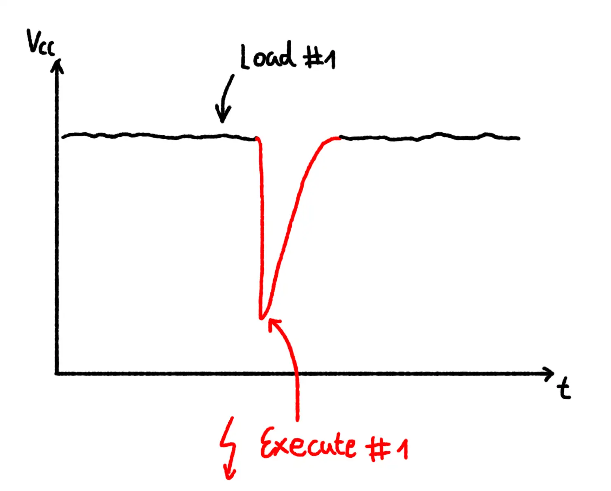
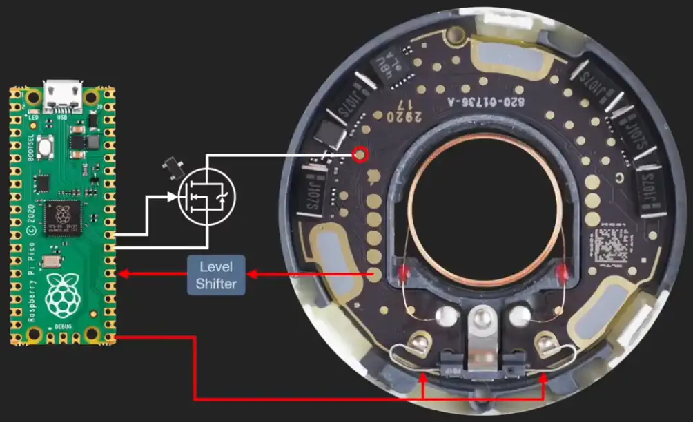
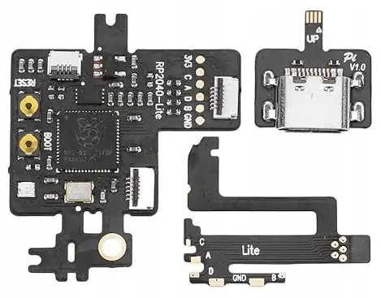
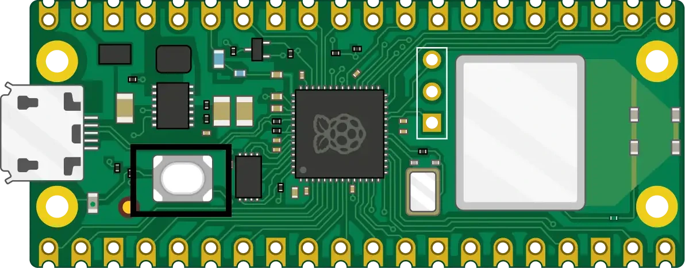
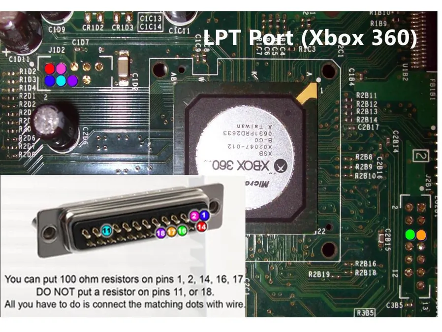

I purchased a Matrix CoolRunner Rev D back in 2017. This little chip is called a glitcher and it’s a type of modchip. Its sole purpose, the reason it was designed, is to deliver a short pulse of energy (~ 100 nanoseconds) to an Xbox 360 Console.

You might ask yourself, “What’s the point in that?”. The answer is quite interesting.
Microsoft are good at security
It boils down to the simple fact that Microsoft learned from the mistakes of their previous console (the original Xbox) and designed security well on their successor.
So well in fact, that it was deemed essentially unhackable by conventional approaches:
tmbinc said it himself, software based approaches of running unsigned code on the 360 mostly don’t work, it was designed to be secure from a software point of view. 1
The entry point for the system, dubbed 1BL, is physically baked into the silicon of the Xbox 360’s CPU 2. The job of 1BL is to load the next phase of the bootloader, called CB from flash storage, and verify that it was signed by Microsoft.
So without Microsoft’s signing keys, there was no real way to hijack control of the system during the boot process. And it only becomes harder as the console boots up through its different phases. Additional security features are turned on as it cascades up the boot chain. And they would all need individually circumvented to get any code running on the console that Microsoft haven’t been over with a fine toothed comb.
So if the door to the castle is locked, and the guards, who are wise to equine ploys, are checking ID at the door, how does one get in? Well you don’t use a key. You inform the guard that his shoelaces are untied and hit him over the head with a club.
Finding the weak link
The point is that if the lock itself is secure, and the procedures surrounding entry are sound, sometimes the weakest link becomes something more fundamental. In our metaphor this is a person, but in the case of the Xbox 360, it is the fact that computation relies on stable energy conditions to behave in a predictable manner.
And this is the idea that fault injection subverts. In the case of the Xbox 360, researchers found that by very quickly toggling a reset signal on the CPU (CPU_RESET), a signal that is usually supposed to reinitialise the CPU, something far more interesting happened. Instead of resetting, the CPU executed the current instruction incorrectly.

Graph demonstrating glitching as voltage over time 3.
This gave the researchers a very useful primitive. They found that an instruction integral to the signature verification process, the mr (move register) instruction, could be glitched into ignoring a value it was about to move and instead move a 0 into its destination register 4.
So by simply knowing when, and toggling the lights on and off, they gained arbitrary code execution.
The future is glitching
It is astounding to me that this kind of esoteric side channel exists at all. But I think the larger point is that it’s becoming more common.
The sort of trust chains that made the Xbox 360 hard to hack 10 years ago have now become commonplace in the world of computing hardware. Microsoft themselves began enforcing hardware backed secure boot for their Operating Systems back in 20215.
More recently in 2024, the security features of an ESP32 v3 (secure boot and flash encryption) were bypassed using a fault injection attack 6.
And there are recent examples specifically leveraging the Raspberry Pi Pico Microcontroller to perform similar fault injection attacks

Apple AirTag’s firmware was dumped in 2021 by stacksmashing using a Raspberry Pi Pico and fault injection 7.

The PicoFly modchip, released in 2023 for the Nintendo Switch, uses fault injection to defeat secure boot on the console 8.
To me, this suggests that fault injection has become a more attractive attack vector in recent years due to a security ecosystem that has hardened over time. But I think it has in turn also become more accessible than ever, with the advent of cheap and accurate microcontrollers such as the Pi Pico.
A love letter to the Pico

The Raspberry Pi Pico microcontroller, released in 2021 for £5 by the Raspberry Pi Foundation 9.
The Pico itself is versatile because it allows for very precise timing via its PIO blocks. These specialised blocks come with enough primitives to implement many standard protocols and have an effective timing resolution of ~7.5 nanoseconds due to the 133 MHz clock 10:
$$\frac{1}{133\text{ MHz}} \approx 7.52\text{ns}$$
I have seen this versatility myself first hand when I finally dusted off the Matrix CoolRunner in 2026 and decided to take another crack at modchipping my Xbox 360.
Back in 2017, when I bought the thing, it was quite expensive to modchip an Xbox 360. You needed a number of tools and skills to successfully mod one:
- A glitching chip
- Solder and an iron
- A NAND programmer
- A JTAG programmer
I tried to save some money by building my own NAND / JTAG programmer using the printer port (LPT port) on a very old PC that I had in reserve for the specific purpose. If I had ever got this working it would have taken over 30 minutes to dump the NAND. I do not recall the reason but I did not manage to pull this off in 2017 and the project was shelved.

LPT NAND dumper wiring diagram 11.
Reattempting this same procedure in 2026 was a breeze by comparison. I was able to flash PicoFlasher onto a Pi Pico and solder it to the correct pads on my Xbox 360. The dump operation then only took a handful of seconds to run.

Raspberry Pi Pico wired to the NAND interface header on the Xbox 360.
Similarly I flashed Pico-dirtyJTAG
onto a Pi Pico and was able to program the CoolRunner’s timing files using Octal450’s Timing Files
and installing the urjtag
project from source.

Raspberry Pi Pico wired to Matrix CoolRunner JTAG interface.
Summary
So, even the most carefully crafted tower can collapse under the weight of its own fundamental assumptions. Like many aspects of computer security, fault injection has become a game of cat and mouse, with increasingly sophisticated defences being met by new tools and methods of circumventing them.
But I think we have now reached a point where DIY tooling has really begun to shine, making light work of challenges that, just a decade ago, required expensive, specialised equipment.
And I have seen this first hand, a project that defeated me in 2017 was made trivial in 2026 by a £5 microcontroller.
References
-
GliGli and Tiros, Reset Glitch Hack, accessed 7 October 2026. https://github.com/gligli/tools/blob/master/reset_glitch_hack/reset_glitch_hack.txt ↩︎
-
Free60Project, Boot_Process, Free60, accessed 7 October 2026. https://free60.org/System-Software/Boot_Process/ ↩︎
-
Fault Injection Library, Overview – Voltage Glitching, accessed 8 October 2026. https://fault-injection-library.readthedocs.io/en/latest/overview/ ↩︎
-
Rodrigo Copetti, Xbox 360 Architecture – The Glitcher, A Practical Analysis, accessed 8 October 2026. https://www.copetti.org/writings/consoles/xbox-360/#tab-13-1-the-glitcher ↩︎
-
Tom Warren, Microsoft’s Windows 11 will require TPM chips for security, The Verge, 25 June 2021, accessed 8 October 2026. https://www.theverge.com/2021/6/25/22550376/microsoft-windows-11-tpm-chips-requirement-security ↩︎
-
Delvaux et al., Fault Injection Attacks on the ESP32, USENIX WOOT 2024, accessed 8 October 2026. https://www.usenix.org/conference/woot24/presentation/delvaux ↩︎
-
stacksmashing, Hacking Apple AirTags, YouTube, 2021, accessed 8 October 2026. https://www.youtube.com/watch?v=_E0PWQvW-14 ↩︎
-
Ansem-SoD, Picofly, GitHub, 2023, accessed 8 October 2026. https://github.com/Ansem-SoD/Picofly ↩︎
-
Raspberry Pi Foundation, Getting started with Raspberry Pi Pico, Raspberry Pi Projects, accessed 8 October 2026. https://projects.raspberrypi.org/en/projects/get-started-pico-w/1 ↩︎
-
Raspberry Pi Foundation, RP2040 Datasheet, accessed 8 October 2026. https://datasheets.raspberrypi.com/rp2040/rp2040-datasheet.pdf ↩︎
-
Superben51, How to hack (RGH) your Xbox 360, Instructables, accessed 8 October 2026. https://www.instructables.com/How-to-hackRHG-your-Xbox-360/ ↩︎